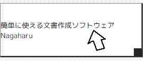
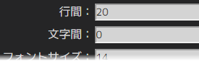
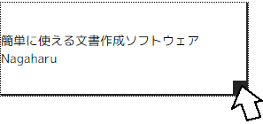

ヘルプ目次へ
シートについての説明
シートは、個々の文章や画像、図形のパーツの事です。
Nagaharuでは、白いキャンバスの上にパーツを配置する事で文書を作成します。
シートの編集


シートをドラッグすると、右側の設定欄に設定項目が表示され、編集可能になります。
シートの移動・拡大縮小
シートをドラッグする事でキャンバスの中なら好きな位置に配置できます。

右端の正方形アイコンをドラッグする事でシートの拡大縮小が可能です。
シートの種類によって拡大縮小の処理が違います。
文字シート・・・シートの大きさによっては、文章が自動改行されます。
画像シート・・・画像を拡大縮小します。縦横比は維持されます。
図形シート・・・図形を拡大縮小します。縦横比は無視されます。